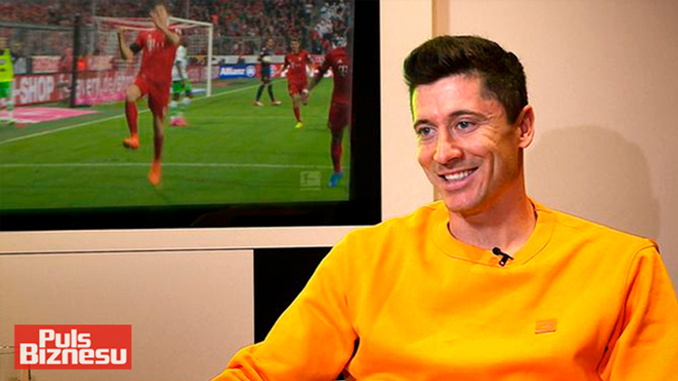

Robert Lewandowski brings goals and fortitude to Borussia Dortmund
At Borussia Dortmund they call Robert Lewandowski "The Body" but it is his mentality that sets him apart. In the second leg of the Champions League semi-final against Real Madrid, Sergio Ramos tried everything in his powers to unsettle the Pole. He tugged Lewandowski's shirt, he pushed him, he elbowed him in the face, he jumped in two-footed – but Dortmund's No9 did not react.
The Dortmund manager, Jürgen Klopp, said that Ramos should have been booked at least seven times and added that Lewandowski was an Ubermensch for not responding to the provocation. The former Poland coach Leo Beenhakker once described Lewandowski as "mentally perfect".
Add goals to Lewandowski's ice-cool mentality – four of them in the first leg against Real and 65 in the past two seasons – and it is easy to see why Manchester United, Real and Bayern Munich want to sign him this summer.
On Saturday, he will lead Dortmund's line against Bayern in the Champions League final with plenty of speculation as to where he will be playing next season – he has one year left on his contract and has made it clear he is not signing a new deal – but it will not matter. His focus will be on beating Bayern, and only that. Then he will talk.
Lewandowski's mental fortitude has mainly been built by adversity. When he was 16, his father and inspiration, Krzysztof, died and two years later Lewandowski was told by Legia Warsaw that he would never make it as a footballer. "My father dying was the toughest time for me," he told Sport-Bild. "Suddenly I was the only man in the family and had to be a grown up. The memory of my father still drives me on. When I do extra training, I tell myself: 'I am doing this for him' and that is good motivation."
When Lewandowski scores an important goal, such as the 2-1 swivel‑and‑toe-poke effort against Real in the first leg, he stops and points towards the skies in memory of his father, who chose the name Robert so that his son would find it easier when he moved abroad as a professional footballer. No, really.
"My father was not there to see my first professional game and when I score an important goal I dedicate it to him," Lewandowski said. "In those moments, I know that he is watching and I hope that he is proud of me."
Lewandowski comes from a sporting family. His father was Polish judo champion and a second division footballer, his mother, Iwona, played volleyball in the top flight, and his sister, also a volleyball player, has represented Poland at under-21 level.
After the disappointment with Legia, Lewandowski moved to third division Znicz Pruszkow, where he was the league's top-scorer for two seasons running, earning his team back-to-back promotions. He moved to Lech Poznan, where he continued to score with impressive regularity: 32 goals in 58 league games earned him a move to Dortmund for €4.75m in 2010.
Klopp said at the time that it had been "Dortmund's most difficult transfer" because of how far apart the clubs were in the valuation. It helped, however, that Lewandowski desperately wanted to join the Bundesliga side in preference to other clubs such as Blackburn Rovers, Parma and Fiorentina.
Initially, he struggled at the Westfalenstadion. He was second choice to Lucas Barrios and, when given a few minutes here and there, he fluffed his lines. It even got so bad that he was called a "Chancentod" – the death of chances — not a hugely encouraging sobriquet for a striker.
In that season Klopp was concerned that Lewandowski was not doing enough to assimilate and was spending too much time with his Polish team-mates Jakub Blaszczykowski and Lukasz Piszczek. He has been described as a "loner" and one interviewer complained that his every question, no matter how elaborate, was met with a "yes", "no" or simply a shrug.
But the striker at least listened to Klopp and learned the language. As his German improved, so did his confidence and his performances. He was also helped that Barrios returned injured from the 2011 Copa América, which meant the Pole began the 2011-12 season as first choice up front. He started every league game before the Christmas break and by the end of the season had scored 22 goals as Dortmund won their second consecutive Bundesliga title.
This season he has 35 goals – 10 of them in the Champions League. But the goals, as he showed at the Bernabéu, are only half the story. He tracks back and helps out defensively so much that few Dortmund players have committed more fouls than he has in the past two seasons. He is also the player fouled the most by the opposition, earning his team free-kicks in good positions.
Karl-Heinz Riedle, who won the Champions League with Dortmund in 1997, explained why Lewandowski is so important. "His superior technique and strength means you can play him up front all on his own," Riedle said. "He shields the ball perfectly and then brings team-mates into play. And then he is a real poacher as well. It is also noteworthy how he has dealt mentally with all the transfer rumours. He has just kept on playing and that attitude has all the hallmarks of a great player."
Franck Ribéry, who will line up against Lewandowski for Bayern, said this season: "I like Robert a lot as a player. He is a good goalscorer, he is strong and he is good on the ball. For me Lewandowski is Dortmund's most important player, even more so than Mario Götze."
Not even Lewandowski's private life is cause for concern. When he signed for Dortmund the German media tried to turn him and his girlfriend, Anna Stachurska, a karate World Cup bronze medallist, into the "Beckhams of Poland" but to little avail. Lewandowski said: "We don't go out to clubs or drink alcohol. We both live for our sports and that is also why we understand each other so well."
When Nuri Sahin came up with the nickname "The Body" the Turkey international said: "Lewi has the most incredible body, it is just pure muscles. It just stuns the other players in the changing room." For Lewandowski, though, it matters only what his body can do on the pitch. "I go in the gym two or three times every week so that I can use my body to gain an advantage on the pitch. And then I look after my diet. It all helps."
Whoever signs Lewandowski in the summer – it is unlikely Dortmund will hold him to his contract, despite the public confidence of the chief executive, Hans-Joachim Watzke – will get an extremely talented and motivated player. And he is only 24 years old.
When Franz Beckenbauer called him the most complete striker in the Bundesliga, Lewandowski said: "That makes my happy, what Herr Franz says. It makes me a little bit proud. I am always working on my game, no matter how good I've played. I must always play better, score even more goals and win even more tackles. I can still improve everything."
For his team-mates, he is a dream player. For his opponents, a nightmare. Just ask Ramos